Por los próximos minutos, no pienses como creyente. Piensa como historiador, como detective, como juez que tiene que evaluar evidencia: ¿existe suficiente evidencia histórica para concluir que Jesús de Nazaret resucitó de entre los muertos?
Gary Habermas dedicó décadas a revisar la literatura académica sobre la resurrección — miles de trabajos de estudiosos del Nuevo Testamento, muchos escépticos, agnósticos e incluso ateos. Encontró un conjunto de hechos mínimos sobre los que existe consenso académico amplio, sin importar la postura religiosa del erudito.
La estrategia: si la resurrección es la única explicación que da cuenta de TODOS estos hechos, sin distorsionar ninguno, tenemos razones poderosas para creer que ocurrió — por evidencia.
"Se trata de identificar los hechos que hasta el erudito más escéptico concede — y preguntar qué explicación da cuenta de todos ellos a la vez."
Antes de hablar de resurrección hay que establecer algo primero: que hubo un cadáver. Lo confirman fuentes que no tenían ningún interés en defender el cristianismo.
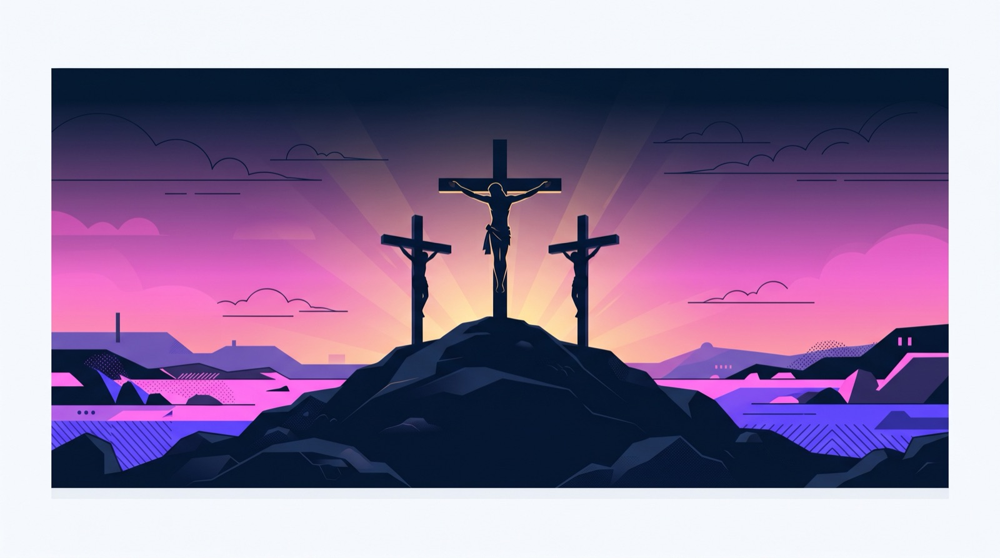
Cuando tus enemigos confirman tu dato, ese dato ya no está en disputa — y eso es exactamente lo que pasó con la crucifixión de Jesús.
En 1986, tres médicos —entre ellos un patólogo de la Clínica Mayo— publicaron en el Journal of the American Medical Association un análisis técnico de la muerte de Jesús.
"El peso de la evidencia histórica y médica indica que Jesús estaba muerto antes de que le infligieran la herida en el costado... las interpretaciones basadas en la suposición de que Jesús no murió en la cruz parecen contradecir el conocimiento médico moderno."
Antes de la cruz, Jesús fue flagelado con un flagrum: tiras de cuero con huesos y metal. A esas alturas ya estaba en shock hipovolémico — pérdida masiva de sangre, corazón acelerado, presión desplomada. Por eso no pudo cargar su propia cruz.
Al colgar de los clavos, la cavidad pulmonar se colapsa y la víctima no puede exhalar; para respirar tiene que empujarse hacia arriba sobre los clavos, una y otra vez, hasta que ya no puede — y muere asfixiado.
A los dos crucificados junto a Jesús les rompieron las piernas para acelerar la asfixia. A Jesús no — los verdugos, profesionales que respondían con su vida si fallaban, ya lo habían constatado muerto. Y por si acaso, le clavaron una lanza en el costado.
En 1968, en una cueva de Jerusalén, se encontraron los restos de Yohanan Ben Ha'galgol — víctima real de crucifixión romana del siglo I — con un clavo de siete pulgadas todavía atravesado en el hueso del talón. La física que describe Metherell no es especulación: es lo que la arqueología desenterró.
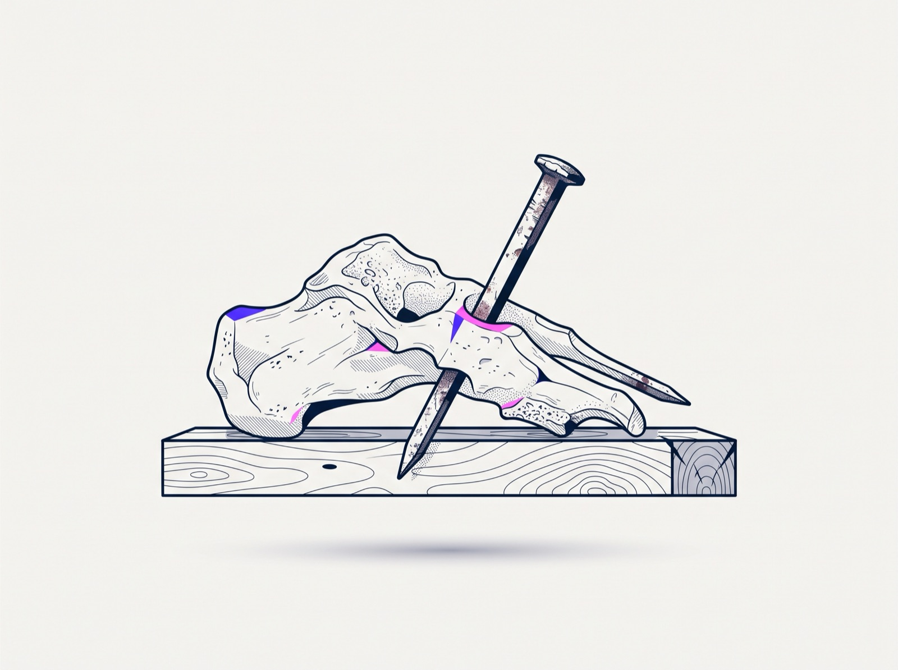
Jesús no solo murió: fue sepultado en un lugar identificable, y días después ese lugar estaba vacío. Ambos datos, juntos, son mucho más difíciles de explicar de lo que parece.
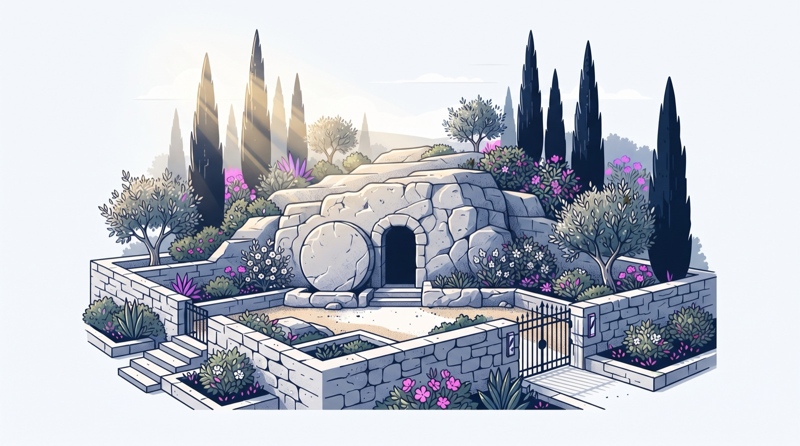
Jesús fue sepultado en una tumba propiedad de José de Arimatea, miembro del Sanedrín — la misma corte que lo condenó a muerte. Si los primeros cristianos estuvieran inventando la historia, ¿pondrían a uno de esos jueces bajo una luz favorable? Jamás. Eso no ayuda la narrativa de nadie.
Y hay algo más decisivo: que la tumba fuera conocida importa muchísimo. Los discípulos no habrían podido predicar en Jerusalén, a solo siete semanas de los hechos, que la tumba estaba vacía, si nadie supiera dónde quedaba.
"El entierro de Jesús es uno de los hechos más antiguos y mejor atestiguados acerca de Jesús" — atestiguado en 1 Corintios 15, en los cuatro Evangelios y en la predicación de Hechos.
Si el cuerpo de Jesús todavía hubiera estado en esa tumba, el movimiento cristiano habría muerto ese mismo fin de semana. Las autoridades solo tenían que sacar el cuerpo y pasearlo por las calles de Jerusalén. Les habría encantado. No lo hicieron. No podían.
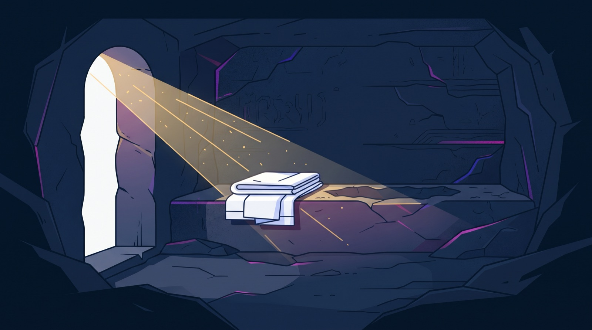
¿Y qué dijeron entonces? Mateo 28 registra que los líderes sobornaron a los soldados para que dijeran que los discípulos robaron el cuerpo. Los enemigos del cristianismo no negaron que la tumba estuviera vacía — la explicaron de otra manera. Eso es testimonio del enemigo: la forma más poderosa de corroboración que existe en historia.
Quienes descubren la tumba vacía son mujeres. Y una de ellas, María Magdalena, es descrita por el propio Lucas como alguien que había estado poseída por demonios.
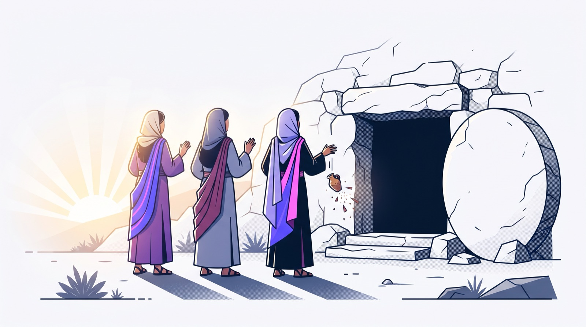
En el siglo I, el testimonio de una mujer no tenía peso legal en un tribunal judío. Si estás inventando una historia para convencer al mundo, pones a los hombres valientes como primeros testigos. Citar ese testimonio solo lastima el intento de pasar una mentira como verdad. Está ahí porque así ocurrió.
Un cuerpo muerto y una tumba vacía solo explican qué pasó con el cadáver. Lo que transforma el caso es que múltiples personas, en circunstancias distintas, afirmaron haber visto a Jesús vivo — y sostuvieron esa afirmación hasta la muerte.
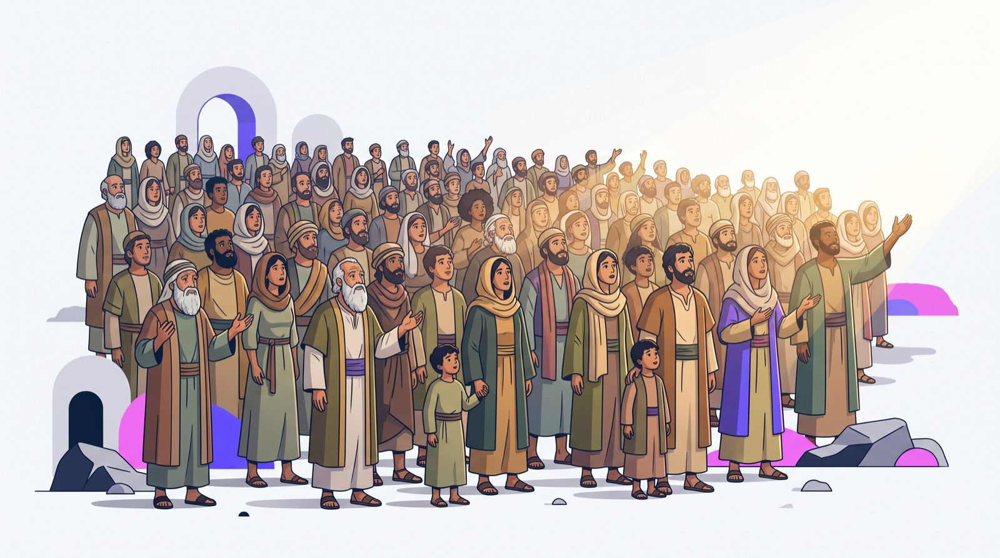
Pablo escribió 1 Corintios alrededor del año 55 — a menos de 25 años de la crucifixión. Pero el credo que cita en el capítulo 15 es más antiguo que la carta: "os he enseñado lo que asimismo recibí" es vocabulario técnico en griego para transmitir una tradición oral ya formalizada.
Pablo cuenta en Gálatas que visitó a Pedro y a Santiago en Jerusalén — y en este credo aparecen justamente Pedro y Santiago como testigos. La mayoría de los eruditos concluye que Pablo recibió el credo directamente de ellos: apenas tres a cinco años después de la crucifixión. Eso destruye la idea de una leyenda que creció lentamente.
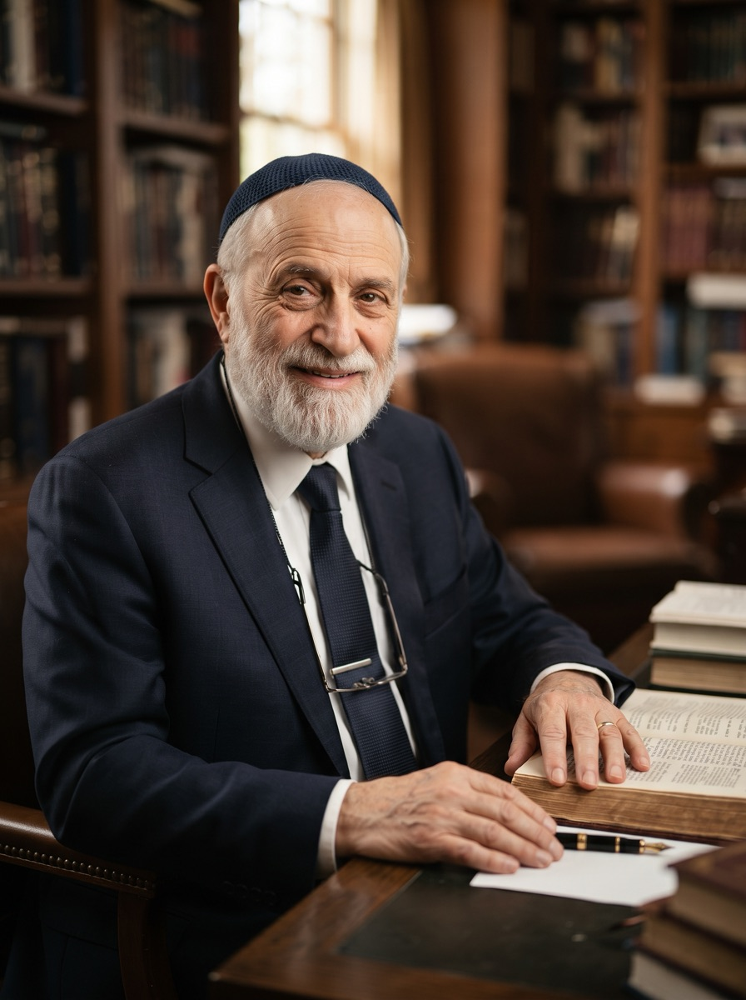
"La resurrección pertenece a la categoría de los acontecimientos verdaderamente reales y efectivos, pues sin un hecho de la historia no hay acto de verdadera fe."
Lapide, examinando la evidencia como historiador, concedió la historicidad de la resurrección sin abandonar su fe judía. Identificó ocho elementos lingüísticos que prueban que Pablo transmite material recibido de los primeros testigos.
Pedro. Los doce. Más de quinientas personas a la vez — "la mayoría de los cuales vive aún". Eso es un desafío directo: si no me creen, vayan y pregúntenles. Después: Santiago. Todos los apóstoles. Y finalmente Pablo mismo.
De toda la lista, dos casos rompen cualquier explicación fácil: un hermano que no creía, y un enemigo que perseguía a muerte.
Hermano de Jesús. Juan 7:5 dice que durante su ministerio, sus hermanos no creían en Él — era escéptico. Pero después de la resurrección se convierte en líder de la iglesia en Jerusalén, y termina martirizado alrededor del año 62. ¿Qué convierte a un hermano escéptico en un mártir? El Resucitado se le apareció a él (1 Corintios 15:7).
No era un escéptico neutral — era el enemigo número uno. Arrestaba creyentes. Consintió en la muerte de Esteban. Camino a Damasco tuvo un encuentro que lo dejó ciego tres días: de perseguidor más feroz a defensor más ardiente — y fue ejecutado por esa fe.
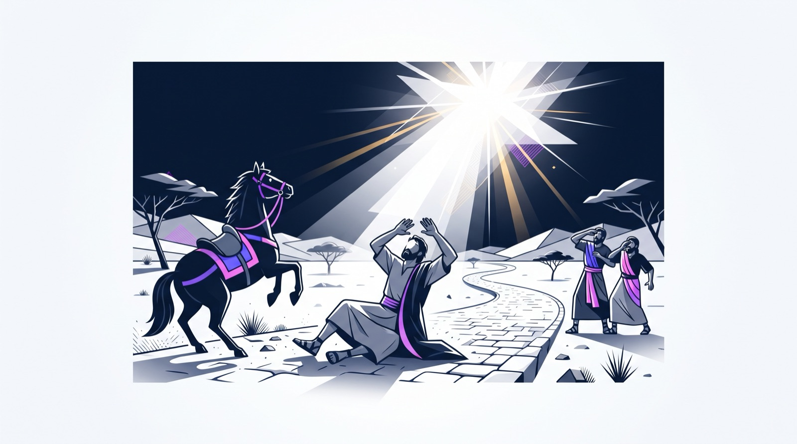
Si la resurrección fuera una alucinación producto del deseo de creer, ¿por qué le ocurrió justamente a las dos personas que no querían creer?
Los discípulos no murieron por lo que creían que había pasado. Murieron por lo que afirmaban haber visto con sus propios ojos. No hay ni una sola retractación conocida.
Cuatro hechos, sostenidos por consenso académico amplio: (1) Jesús murió crucificado. (2) Fue sepultado en una tumba conocida. (3) Esa tumba apareció vacía. (4) Múltiples personas —incluyendo un hermano escéptico y un perseguidor activo— afirmaron verlo vivo, y murieron sosteniéndolo.
Los escépticos han propuesto cuatro teorías. El problema estructural que comparten: cada una, en el mejor de los casos, explica un hecho — y deja los otros tres sin explicación.
Cuando alguien diga "los discípulos robaron el cuerpo", no empieces refutando. Pregunta: "¿Qué evidencia del siglo primero tienes a favor de esa teoría?" La respuesta es: ninguna. La única teoría alternativa que aparece en una fuente del siglo I es "robaron el cuerpo" — y aparece en Mateo, identificada explícitamente como una mentira pagada.
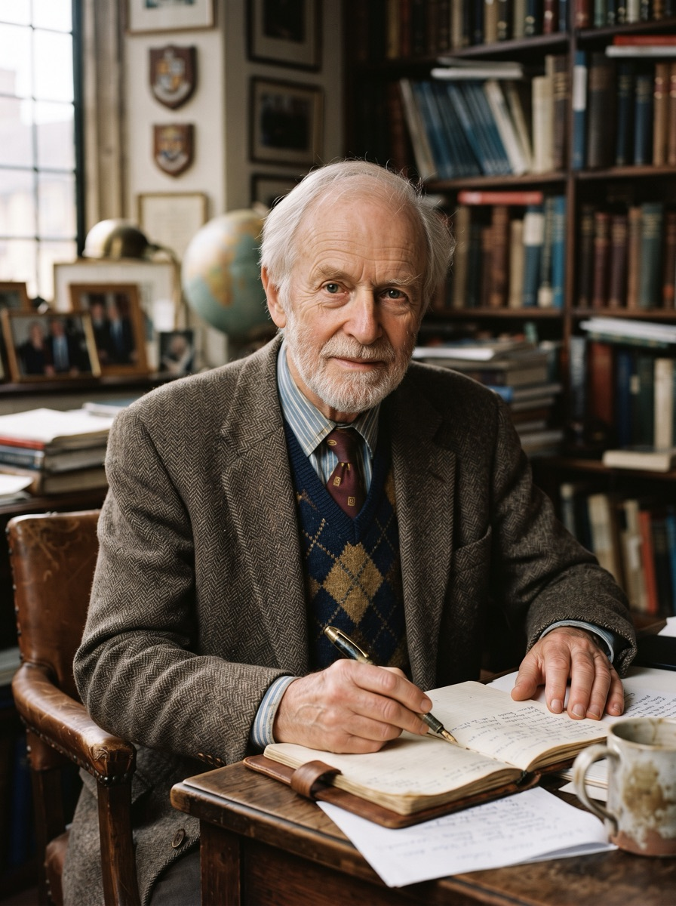
"La tumba estaba vacía."
Reconoció que ninguna explicación naturalista daba cuenta adecuada de los hechos.
La resurrección explica todo a la vez: la tumba vacía, las apariciones múltiples, la conversión de Santiago y de Pablo, el nacimiento de la iglesia precisamente en Jerusalén —el único lugar donde los hechos podían verificarse o refutarse—, y el cambio del día de adoración del sábado al primer día de la semana en judíos devotos.
Una religión entera fue construida sobre este evento, en el lugar exacto donde era más fácil desmentirlo. Y nadie pudo desmentirlo.
"Y si Cristo no resucitó, vuestra fe es vana; aún estáis en vuestros pecados."
1 Corintios 15:17 (RVR1960)Cinco preguntas que cualquier persona razonable va a hacer — y cómo responderlas con honestidad.
La resurrección es un mito copiado de religiones paganas (Osiris, Mitra, Adonis).
Esas deidades son "figuras nebulosas de un pasado imaginario": mitificaciones de los ciclos de la naturaleza, sin personas, lugares ni fechas verificables. El dato decisivo es cronológico: el primer paralelo real de un dios moribundo y resucitado no aparece hasta el año 150 d.C. — más de un siglo después del origen del cristianismo. El único caso precristiano, Osiris, ni siquiera vuelve a la vida física.
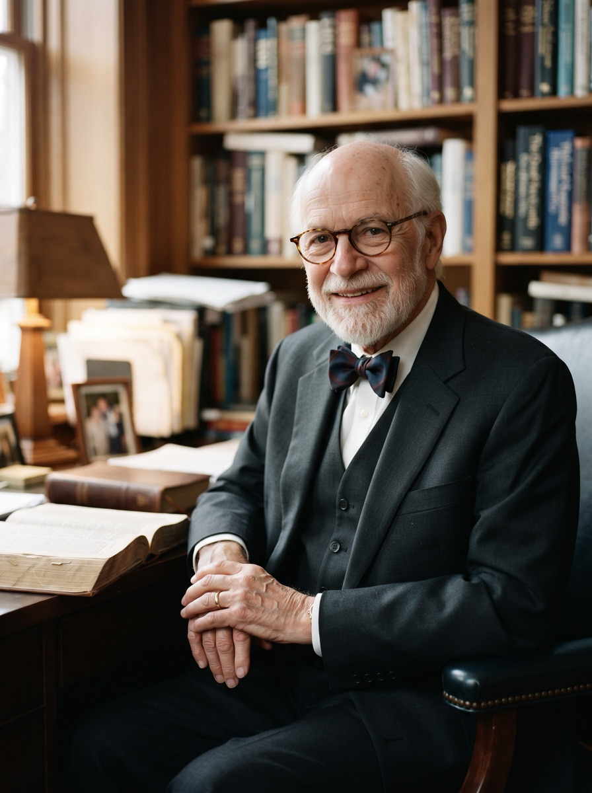
Describe a esas deidades como "figuras nebulosas de un pasado imaginario".
Y aunque existieran paralelos previos, eso no probaría copia: Star Trek precedió al transbordador espacial, y eso no significa que los informes de la NASA se copiaran de Star Trek.
Los discípulos solo tuvieron alucinaciones.
Las alucinaciones son experiencias individuales y privadas. No le ocurren a más de quinientas personas simultáneamente, ni a gente en circunstancias completamente distintas: María llorando en el jardín, dos caminando a Emaús, pescadores en el lago, los once en un aposento. Además, no explican la tumba vacía — y si tantos hubieran alucinado, se habrían curado con una simple visita a la tumba ocupada.
¿Y los milagros de otras religiones?
No todas las afirmaciones milagrosas tienen el mismo respaldo. Lo que distingue a la resurrección es la convergencia de cinco cosas a la vez: testigos múltiples e independientes, escritura temprana dentro de la generación de los testigos, confirmación desde fuentes hostiles, conversiones inexplicables de un escéptico y un perseguidor, y el surgimiento de la iglesia exactamente donde los hechos podían refutarse.
La gente de esa época era supersticiosa.
Sabían perfectamente que los muertos no resucitan — por eso los discípulos estaban escondidos y desesperados después de la crucifixión.
Documenta que los judíos creían en una resurrección general y al final de la historia, no en una resurrección individual antes del fin.
La resurrección de Jesús no era algo que estuvieran esperando: los sorprendió a ellos primero.
Concedo que pasó algo extraordinario — pero eso no prueba que Jesús sea Dios.
Es una objeción honesta. Lo que hemos establecido es que los cuatro hechos mínimos son sólidos y que la resurrección es la mejor explicación. Es un paso enorme, pero es un paso. Un hombre que anunció por adelantado su propia muerte y resurrección, y luego resucitó, no queda en la categoría de "maestro interesante". La resurrección es la credencial que respalda todo lo demás que Jesús afirmó sobre sí mismo. La Sesión 11 toma las teorías alternativas una por una y enfrenta el problema del mal. La Sesión 12 llega a la pregunta que ninguna evidencia puede responder por ti: ¿y qué si es verdad?
| Hecho | Contenido |
|---|---|
| #1 | Jesús murió crucificado — confirmado por Josefo, Tácito, el Talmud y el JAMA. |
| #2 | Fue sepultado en la tumba conocida de José de Arimatea, miembro del Sanedrín. |
| #3 | La tumba apareció vacía — y los enemigos no la negaron, la explicaron de otro modo. |
| #4 | Múltiples testigos lo vieron vivo, incluidos un hermano escéptico y un perseguidor. |
| Teoría | Por qué falla |
|---|---|
| Desmayo | Contradice el conocimiento médico moderno (JAMA); un hombre así no se aclama como vencedor. |
| Robo | ¿Murieron por sostener una mentira propia? No explica a Santiago ni a Pablo. |
| Alucinación | No es experiencia colectiva — y no explica la tumba vacía. |
| Tumba errada | Las autoridades solo tenían que ir a la correcta. No explica las apariciones. |
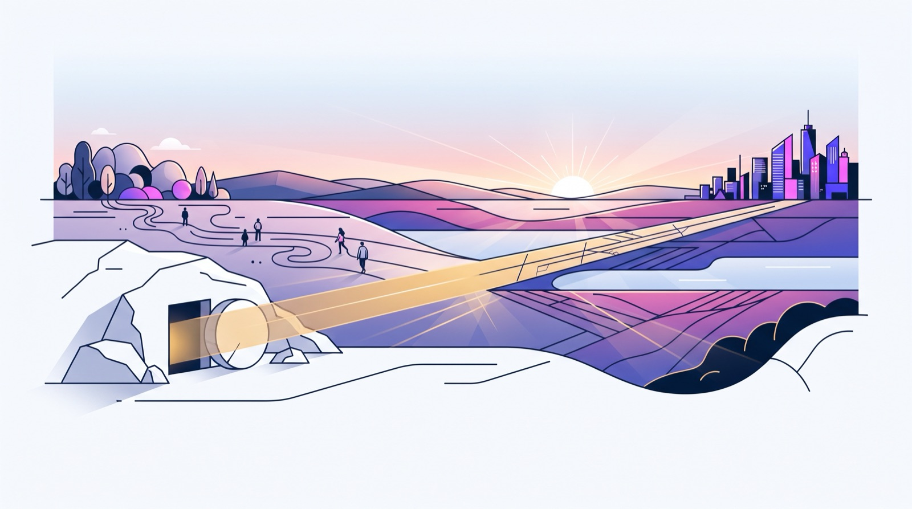
Pablo fue brutalmente claro sobre lo que está en juego: si Cristo no resucitó, todo lo que había predicado no servía para nada. Pone toda su religión sobre la mesa. Ningún fundador de religión hace eso. La resurrección no es un adorno del evangelio. Es el evangelio.
Pero esa moneda tiene otra cara. Si Cristo sí resucitó, todo cambia. Cambia cómo vives hoy. Cambia cómo enfrentas la muerte. Cambia cómo hablas con alguien que no cree.
No se trata de saltar al vacío. La evidencia histórica apunta en una sola dirección. El paso de los hechos a la fe personal no es un salto a la oscuridad — es un paso confiado sobre terreno sólido.
"La resurrección pertenece a la categoría de los acontecimientos verdaderamente reales, porque sin un hecho de la historia no hay acto de verdadera fe."
Pinchas Lapide — erudito judío que nunca se hizo cristiano"Y si Cristo no resucitó, vuestra fe es vana; aún estáis en vuestros pecados."
1 Corintios 15:17 (RVR1960)